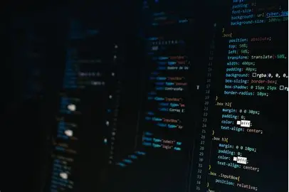

Programming is the process of creating instructions that a computer can understand and execute. It involves writing code in various programming languages to develop software, applications, websites, and more. Programming allows us to automate tasks, solve problems, and create innovative solutions in various fields such as technology, science, and business.
Whether you're interested in learning the basics of programming or want to enhance your coding skills, there are many resources available online. You can find tutorials, courses, and communities that can help you get started and improve your programming abilities. Programming is a valuable skill that can open up opportunities in various industries, including software development, data science, artificial intelligence, and more.
Join the Skill Swap community today and start exchanging skills with fellow students! Whether you want to learn programming, improve your math skills, or explore graphic design, Skill Swap is the place to connect and grow together.
For more information on programming, you can explore online platforms such as Codecademy, freeCodeCamp, and Coursera. These platforms offer a wide range of courses and resources to help you learn and master programming languages such as Python, JavaScript, Java, and more. Additionally, there are many online communities and forums where you can ask questions, share knowledge, and connect with other programmers.
>Codecademy, freeCodeCamp, and Coursera. These platforms offer a wide range of courses and resources to help you learn and master programming languages such as Python, JavaScript, Java, and more. Additionally, there are many online communities and forums where you can ask questions, share knowledge, and connect with other programmers.Remember, practice is key to becoming proficient in programming. Work on projects, explore different programming languages and frameworks, and seek help when needed. With dedication and perseverance, you can develop strong programming skills and apply them to various real-world situations.
Programming is a dynamic and ever-evolving field that offers endless opportunities for creativity and innovation.
Programming is not just about writing code; it's about solving problems and creating solutions. It requires logical thinking, creativity, and attention to detail. Whether you're developing a simple website or building a complex software application, programming allows you to bring your ideas to life and make a positive impact on the world.
Programming is often divided into different paradigms, such as procedural programming, object-oriented programming, and functional programming. Each paradigm has its own approach to organizing code and solving problems, but they all share the common goal of creating efficient and maintainable software.
Programming is a powerful tool that can help us automate tasks, analyze data, and create innovative solutions. It is used in fields such as software development, data science, artificial intelligence, and more to build applications, analyze data, and solve complex problems. By learning programming, you can develop critical thinking skills, improve your problem-solving abilities, and gain a deeper understanding of technology and its impact on our lives.
